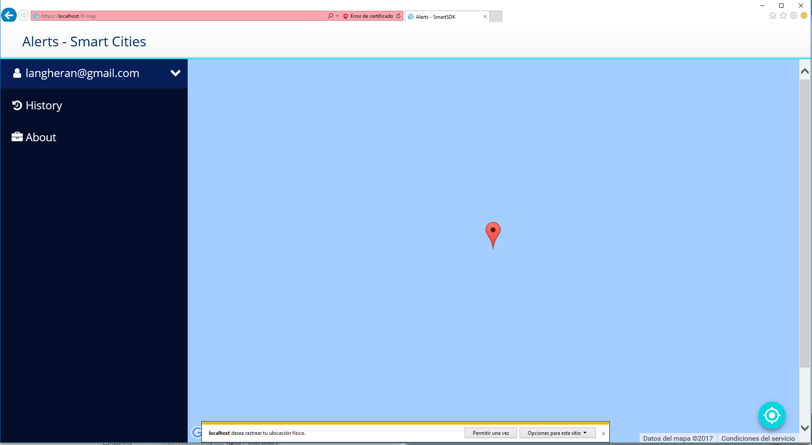
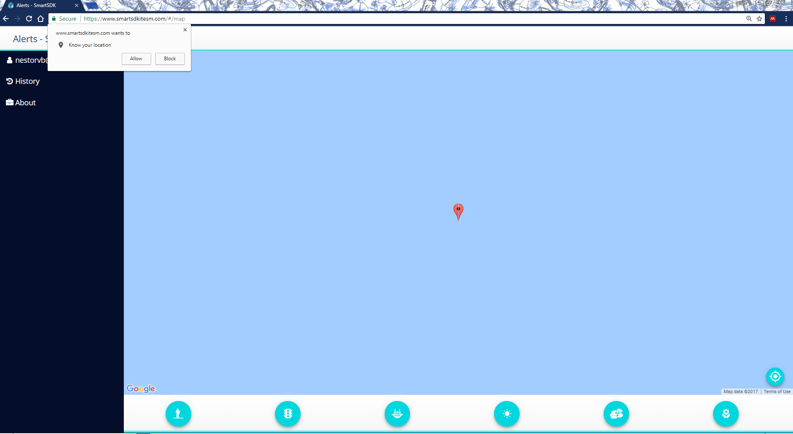
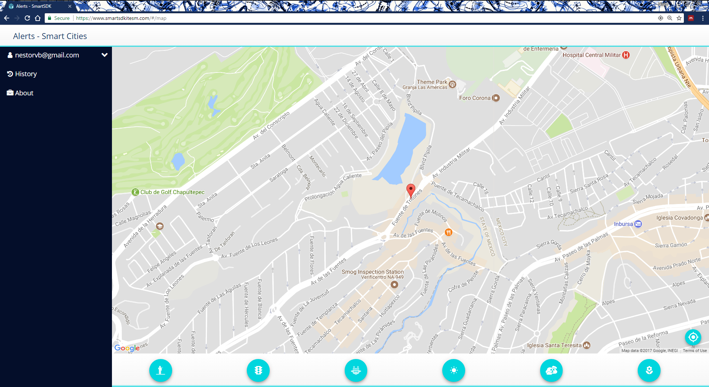

By utilizing the browser’s built in geolocation feature, Alerts from SmartSDK allows you to track where you are when sending an alert. To use this feature, you must first “Enable geolocation tracking” in your browser settings, then going to the Map screen. Make sure 443 and 8443 ports of your network are also enabled.
Once enabled, whenever you enter the page to send an alert, your browser will ask you to allow it to track current location. You must choose “allow” in order for this feature to work. How to allow location tracking will differ depending on your browser, but here’s what it looks like in Internet Explorer and Chrome:
iPhone (Safari)
If you’re clocking in from an iPhone, location services must be enabled for Safari in order for us to track your location. To enable location tracking, go to your iPhone Settings > Privacy > Location Services, and make sure to allow “Safari Websites” to access your location “While Using the App”. More info here:
https://support.apple.com/en-us/HT201357
iPhone (Chrome)
https://support.google.com/chrome/answer/142065?hl=en
- Open your device’s settings app.
- From the list, touch Chrome .
- Touch Location.
- Choose to either have Chrome never access your location, or allow Chrome access to your location only while using the app.
Android (Chrome)
https://support.google.com/chrome/answer/142065?hl=en
- Open the Google Chrome app.
- Touch the Chrome menu
.
- Touch Settings > Site settings > Location.
- Use the switch to either have Chrome ask before accessing your location, or to block all sites from accessing your location.
- Touch the specific blocked or allowed sites to manage exceptions.
Internet Explorer 11

Chrome

(If you don’t see this popup, you may have to refresh the page)
- Open Chrome.
- In the top right, click the Chrome menu
.
- Click Settings > Show advanced settings.
- In the “Privacy” section, click Content settings.
- In the dialog that appears, scroll down to the “Location” section. Select your default permission
for future location requests:
- Allow all sites to track your physical location: Select this option to let all sites automatically see your location.
- Ask when a site tries to track your physical location: Select this option if you want Google Chrome to alert you whenever a site wants to see your location.
- Do not allow any site to track your physical location: Select this option to automatically deny requests for your location.
- Click Manage exceptions if you want to remove permissions you gave before to specific sites.
Once you send an alert with geolocation enabled, you can see this information by clicking on their clock time, and choosing “History”:

For more accurate location tracking, we recommend using this feature on wifi. If you are connected to the internet via ethernet cable, we won’t be able to pinpoint your location as well.